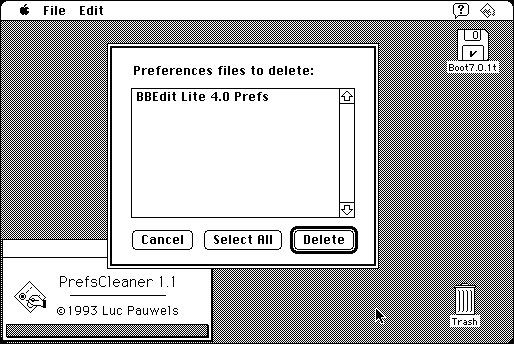

Download
PrefsCleaner-1.1.zip (33K) PrefsCleaner 1.1 repackaged into a zipped hfs disk image and checksum file. The disk image can be mounted with Mini vMac.
PrefsCleaner-1.1.sit.hqx (41K) PrefsCleaner 1.1 in the original format.
copyright: Luc Pauwels
mod date: Apr 13, 1993
license: shareware
from url :
PrefsCleaner
A ‘Utility that removes “orphaned” preferences files (i.e. preferences files for which the application or whatever created them, can’t be be found anymore on any of the mounted volumes) from the System Folder.’ Requires “system 7.0”.

If you find these downloads useful, please consider helping the Gryphel Project, which hosts them.
Here are the md5 checksums for the downloads, signed with Gryphel Key 5:
--------- GRY SIGNED TEXT --------- 5dfc9ef8998cfc21ce41fcd6f2b3c739 PrefsCleaner-1.1.zip 5e991a43e5f7417d0fc16e90ca76ef3d PrefsCleaner-1.1.sit.hqx ------- BEGIN GRY SIGNATURE ------- Gry/4Xa8CFcUzxdN/PbyUmh1HmyESiODTHhs8RgOz/eU+z2ZGrGFDRTeQhra3Aiy pbODBtBc8+XBPfx9Vqg/MSNo41tF9LY358nSoMSNEhDp1epzg9+HT4MMroTCCwxe ist/s1xysc9bXGoaMVQ4DgpfzQHdQdEYtiDfP8elNepPG9WAlaeKA641c5TH/Apc -------- END GRY SIGNATURE --------